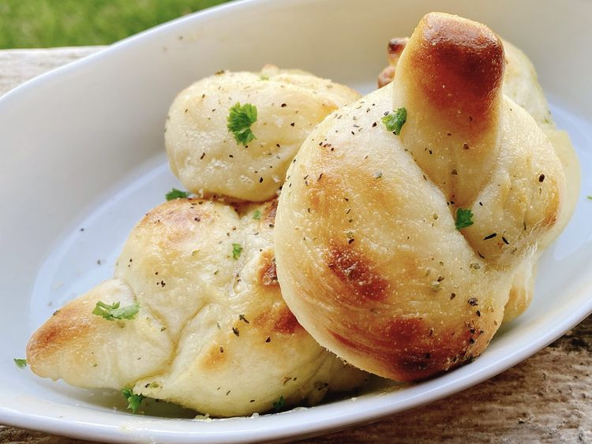

Two-Ingredient Dough Garlic Knots

Description
These garlic knots begin with the "internet famous" 2-ingredient dough.
Add a few more ingredients and you'll have incredible garlic knots to
serve with an Italian meal.
Ingredients
Bread dough:
- 1 cup self-rising flour
- 1.00 cup whole fat plain Greek yogurt
- ¼ teaspoon granulated garlic
- ¼ teaspoon Italian seasoning
- 1 pinch salt
Garlic Topping:
- 1 tablespoon melted butter
- 1 tablespoon olive oil
- ½ teaspoon dried parsley
- ½ teaspoon garlic granules
Steps
-
Combine flour, yogurt, garlic granules, Italian seasoning, and salt in a
bowl; mix to combine.
-
Dust work surface with more flour. Transfer dough to work surface. Knead
dough for 8 to 10 minutes with the palm of your hand. Add more flour (1
teaspoon at a time) as needed to keep dough from being too sticky.
-
Preheat the oven to 500 degrees F (260 degrees C). Line a baking sheet
with parchment paper or a silicone baking mat (such as Silpat®).
-
Shape dough into a rounded loaf. Using a bench scraper, cut off 8 wedges
of dough. Roll each wedge of dough into a rope shape and tie into knots.
Place knots onto the prepared baking sheet.
-
Bake in the preheated oven until knots are lightly browned, 10 to 12
minutes.
-
Meanwhile, combine melted butter, oil, garlic granules, and parsley for
topping in a small glass bowl. Brush mixture over the warm knots.
Return to homepage